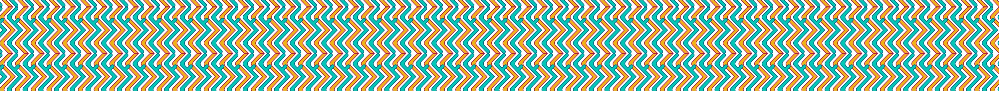

Il brief di questo progetto accademico era quello di realizzare la distesa di copertina, con logica one-shot, per la pubblicazione “Spillover” di David Quammen.
Il colore di fondo è stato scelto per trasmettere l’idea della nocività degli agenti patogeni di cui questo testo tratta. Il lettering che riguarda il titolo è stato sillabato e gestito come se si trattasse di un’immagine: i glifi, massicci e imponenti si susseguono in maniera frammentaria, irregolare, spesso con un’angolazione differente rispetto alla linea di base. In stampa sarà trattato con una verniciatura lucida settoriale. Ciò permette nel complesso di rappresentare visivamente il concetto espresso dalla parola stessa “SPILLOVER”, ovvero il trasferimento dell’agente patogeno da una specie all’altra, un senso generale di frammentarietà, ma al tempo stesso di profondo disagio.
Il sottotitolo, graficamente più sobrio, chiarisce immediatamente il contenuto del testo. La quarta di copertina presenta la sinossi del testo così che il lettore possa constatare sommariamente il contenuto. Sulla costa l’ordine è ripristinato: il titolo appare leggibile e formattato correttamente.
Formato finale della copertina: 135x205 mm.
Carta della copertina cartonata: carta patinata opaca da 120 g/m².Plastificazione soft touch e verniciatura settoriale.
Legatura: filo refe.
Margini di testa, piede e taglio: 18 mm.Margine di cucitura: 15 mm.